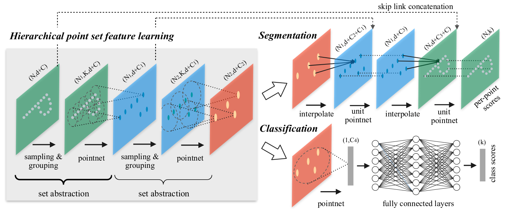
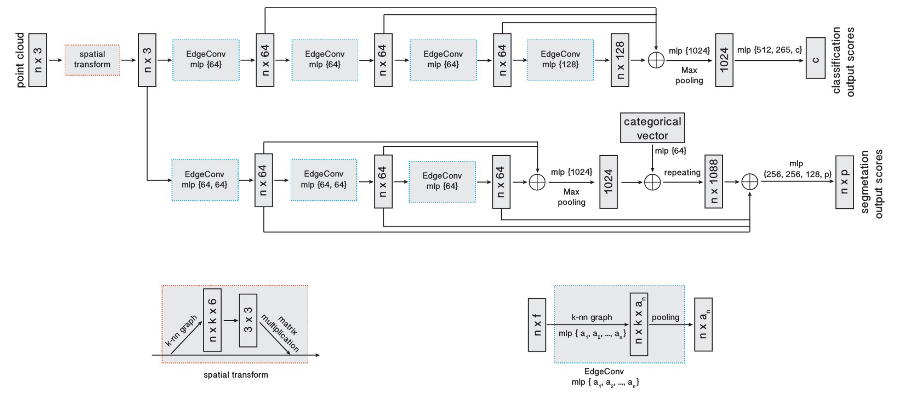
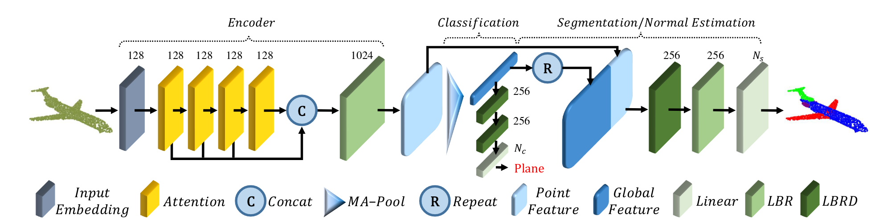
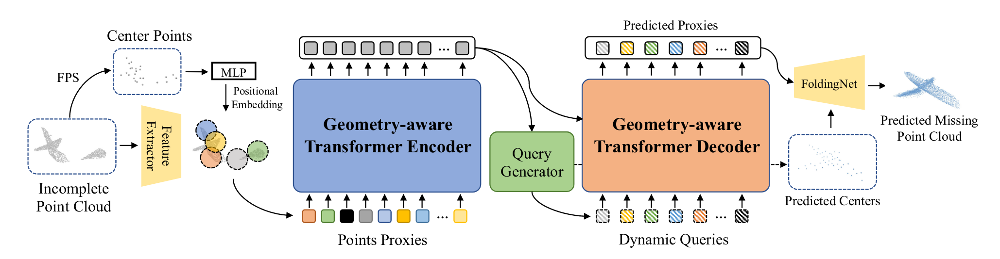
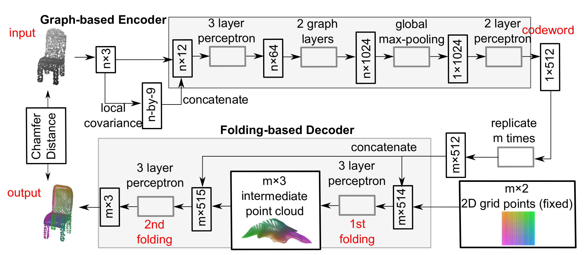

Point sets and local geometry
PointNet and PointNet++ provide direct point-set and hierarchical feature-learning baselines for segmentation.

Graduation research · 3D geometric learning
A two-part project exploring 3D tooth segmentation and crown generation through point-cloud learning, dynamic graphs, and transformer-based architectures.
The project investigates an end-to-end workflow for dental restoration: segment teeth from 3D data, then generate a crown that fits the local geometry. The work combined deep-learning methods for point sets with geometric processing and reconstruction.
The segmentation model achieved 95% accuracy in the graduation project evaluation. The project reports document the segmentation and crown-generation stages separately.
Read Part 1: 3D teeth segmentation · Read Part 2: Crown generation
PointNet and PointNet++ provide direct point-set and hierarchical feature-learning baselines for segmentation.

DGCNN builds local neighborhoods in feature space and applies edge convolutions to model relationships between points.

Point-cloud transformers were explored for aggregating broader context across geometric features.

FoldingNet and geometry-aware transformer approaches informed experiments in reconstructing missing structure and preserving spatial context.

A contrastive-learning component was trained to preserve upper and lower dental arches in a fixed canonical space. This provided a consistent geometric frame for downstream crown-generation experiments.
